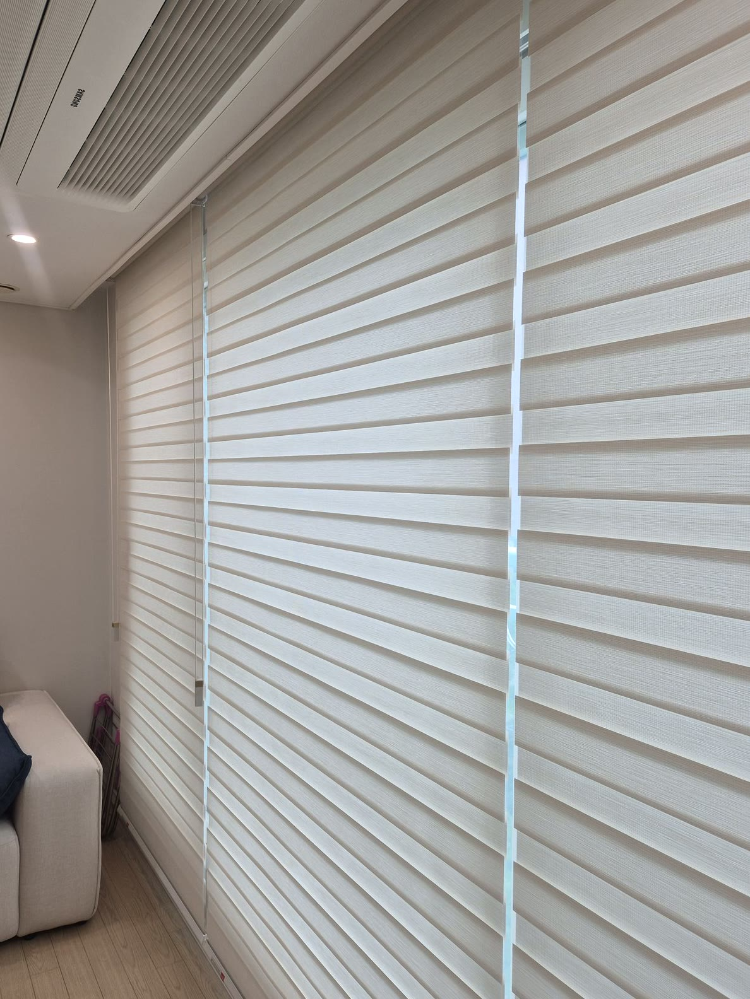
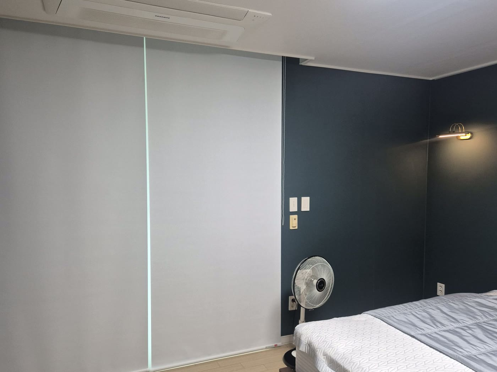
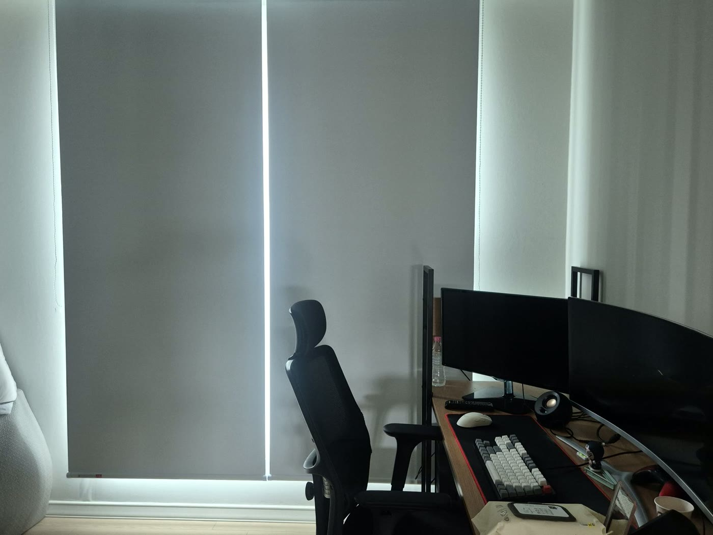
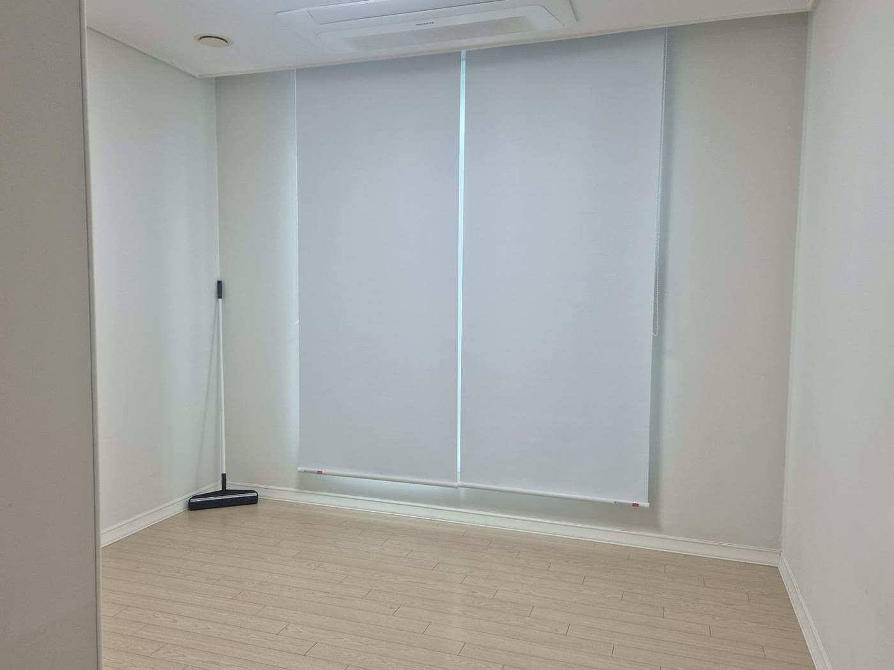

2026년 7월 16일 시공
대전 죽동 빌라
거실 우드룩 콤비블라인드 · 방 암막롤스크린 시공후기

대전 죽동의 빌라에 다녀왔습니다.
남자분 혼자 지내시는 집이었습니다.
혼자 사는 집이라고 하면 대충 어둡게만 가리면 될 것 같지만, 이 고객님은 공간을 꽤 명확하게 나눠서 생각하고 계셨습니다.
거실은 집에 들어왔을 때 가장 먼저 마주하는 곳이라 밝고 화사했으면 좋겠고, 대신 낮에 바깥 시선은 가려졌으면 좋겠다.
그리고 안방과 컴퓨터방, 게스트룸은 쉬고 집중하는 공간이니 최대한 아늑하고 어둡게.
'밝은 거실, 어두운 방' — 같은 집 안에서 정반대의 두 가지를 원하셨고, 그래서 제품도 공간에 맞춰 다르게 갔습니다.
거실은 베이지 우드룩 콤비블라인드로, 밝고 화사하게
거실은 베이지 우드룩 콤비블라인드로 맞췄습니다.
콤비블라인드는 슬랫을 겹치면 은은하게 가려지고, 어긋내면 그 틈으로 빛이 들어오는 구조입니다.
채광과 시선 차단을 손끝에서 조절할 수 있는 거죠.
낮에는 부드럽게 빛을 들여 거실을 환하게 유지하면서, 바깥에서 안이 훤히 보이는 건 자연스럽게 막아 줍니다.
색은 밝은 베이지 우드룩으로 골랐습니다.
우드 톤 바닥, 밝은 벽과 잘 어우러져서 창가가 화사해지면서도 튀지 않고, 집 전체 분위기를 차분하게 살려 줍니다.
고객님이 원하신 '집에 들어왔을 때 밝은 느낌'이 딱 이 지점이었습니다.

안방·컴퓨터방·게스트룸은 화이트 암막롤스크린으로, 깊게 어둡게
방 세 개는 완전히 다른 방향으로 갔습니다.
화이트 암막롤스크린입니다.
이 방들은 자고, 쉬고, 컴퓨터 앞에서 집중하는 공간이라 빛이 들어오면 오히려 방해가 됩니다.
그래서 채광을 조절하기보다, 필요할 때 확실히 어둡게 만드는 게 우선이었습니다.
암막률 높은 롤스크린을 달아, 내리면 바깥 빛을 제대로 차단해 방을 깊게 어둡게 만들어 줍니다.
특히 안방은 짙은 네이비 벽에 무드등이 있는 아늑한 방이었습니다.
여기에 화이트 롤스크린이 깔끔하게 얹혀 낮에는 정돈된 느낌을, 내리면 푹 쉴 수 있는 어둠을 만들어 줍니다.
컴퓨터방은 모니터 화면에 빛 반사가 없어야 하니, 이 암막이 더 반가운 공간이고요.


왜 거실은 콤비, 방은 롤스크린이었나
같은 집인데 왜 제품을 나눴는지 궁금하실 수 있습니다.
거실은 '조절'이 핵심입니다.
빛을 들일지 가릴지 그때그때 다르니, 슬랫으로 미세하게 조절되는 콤비블라인드가 맞습니다.
반대로 쉬는 방은 '조절'보다 '확실한 암막'이 핵심이라, 내리면 딱 어두워지는 롤스크린이 맞고요.
공간이 하는 일이 다르면, 창을 가리는 방식도 달라야 한다는 게 저희 생각입니다.

마무리는 방마다 직접 올렸다 내려보며
시공을 마치고는 거실 콤비는 슬랫이 부드럽게 조절되는지, 방 롤스크린은 내렸을 때 빛이 새지 않는지 하나하나 확인했습니다.
혼자 지내시는 집은 한번 손보면 자주 부를 일이 없도록, 처음에 제대로 잡아두는 게 중요하니까요.
집이라고 다 같은 커튼을 달 필요는 없습니다.
밝게 쓰고 싶은 공간과 어둡게 쉬고 싶은 공간을 나눠서 생각하면, 각 방이 훨씬 편해집니다.
어떤 방을 어떻게 쓰시는지 편하게 말씀해 주시면, 거기에 맞는 제품을 함께 찾아드립니다.
창 사진 한 장만 보내주셔도 방문 전에 대략적인 견적부터 안내해 드립니다.
대구·경북 전 지역은 물론, 이번처럼 인근 지역 출장도 가능합니다.